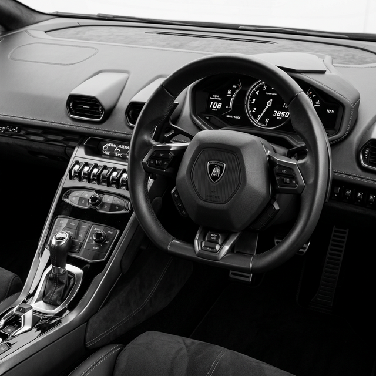
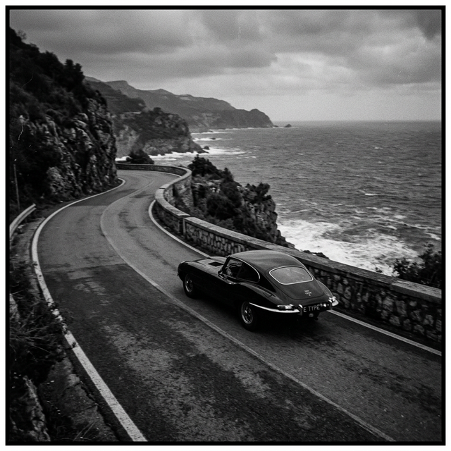

Skoda Yeti, kompakt boyutlarına rağmen sunduğu devasa iç hacim ve pratik çözümlerle otomobil dünyasının en ilginç ve çok yönlü araçlarından biridir. Orijinal tasarımı ve sağlam duruşu onu yıllar sonra bile yollarda dikkat çekici kılmaya yetiyor. Modern SUV pazarının birbirine benzeyen hatları arasında, kendine has kutu profili ile adeta bir başkaldırıyı temsil ediyor.
Aracın üretim felsefesi, sürücü ve yolculara en optimum alanı sunmak üzerine kurulu. Sadece şehir içinde rahat bir yönlendirme hissi vermekle kalmayan bu kısa dingil mesafeli araç, zekice tasarlanmış alt yapısı sayesinde oldukça tatminkar bir yol tutuş da sağlıyor. Şehir dışı yollarda, özellikle de hafif engebeli arazilerde, süspansiyon geometrisi ve opsiyonel sistemi sayesinde sürücüsüne büyük bir güven veriyor. Yeti, sadece asfaltta değil, sürpriz toprak yollarda da sınırlarını test etmeyi seven maceracı bir ruha sahip.

Zekice Detaylar: Simply Clever
Skoda'nın 'Simply Clever' (Sadece Zekice) yaklaşımı bu araçta zirveye ulaşıyor. Bagajdaki kancalar, çıkarılabilir arka koltuklar (VarioFlex sistemi) ve sayısız saklama gözü aracı adeta tekerlekli bir İsviçre çakısına dönüştürüyor. Uzun yolculuklarda veya kamp maceralarında bir otomobilden bekleyeceğiniz hemen hemen her şeyi bu kompakt gövdede bulabiliyorsunuz.
İç mekan tasarımında karmaşadan uzak, tamamen işlevsel ve ergonomik bir yapı tercih edilmiş. Sürücü odaklı konsol tamamen dayanıklı malzemelerden üretilmiş ve yüksek sürüş pozisyonu yolu çok daha iyi okumanıza yardımcı oluyor. Büyük cam yüzeyler sayesinde ferahlık hissi doruklara ulaşırken, görüş açılarındaki başarısı onu şehir içi trafikte tam bir hakimiyet noktasına çeviriyor.

"Kutu gibi görünümü aldatıcı olabilir; direksiyonun başına geçtiğinizde devasa bir dünyaya adım attığınızı hissediyorsunuz."
Güçlü Duruş, Verimli Motorlar
Farklı motor seçenekleri arasında özellikle düşük hacimli ancak torklu turbo üniteler ve verimli dizel motorlar, markanın uzun yıllara dayanan mühendislik birikiminin eseri. İster otobanda uzun süreli sabit hız sürüşleri yapın, ister hafif arazi şartlarına girin, Yeti her koşula uyum sağlayabiliyor. 1.2 TSI ünitenin getirdiği inanılmaz yakıt ekonomisi her türden kullanıcı profiline hitap ediyor.
Yalıtım oranları da dönemi için oldukça tatminkar seviyelerde tutulmuş. Elektronik donanımların sadeliği, aracın mekanik bağını daha saf hissetmenizi sağlıyor. Elektronik destek sistemlerinin yerinde müdahaleleri, Yeti'yi acemi bir sürücü için dahi son derece öngörülebilir kılıyor.
Otomotiv tarihinin en karakterli SUV denemelerinden biri olan Yeti, sadelikten güç alan harika bir mühendislik ürünü olmaya devam ediyor. Değerini her geçen gün katlayan bu şirin ama yetenekli araç, otomobil kültürünün gizli kalmış kahramanlarından biri olarak yollara tutunmayı sürdürecek.